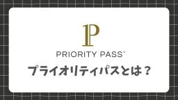
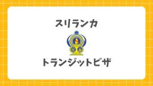
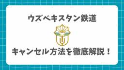
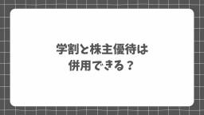
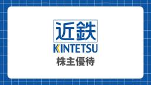

nrtlog.com
https://nrtlog.com/
nrtlog.com
フィード
深圳航空のエコノミークラスの機内食を正直レビュー！実際の成田-深圳で提供された機内食を写真付きで紹介！ドリンクメニューや特別機内食の予約方法も解説！
nrtlog.com
深圳航空のエコノミークラスの機内食を正直レビュー！成田-深圳線(ZH651便)で提供された実際の機内食を写真付きで紹介！アルコールなどのドリンクメニューや特別機内食の予約方法まで徹底解説！
12時間前

空港ラウンジやレストランも使い放題！プライオリティパスとは？料金や無料で持てるおすすめクレジットカードを徹底解説！
nrtlog.com
空港ラウンジや提携レストランが使い放題になるプライオリティパスとは？使えるラウンジやカフェ、レストランなどをプライオリティパスを愛用する筆者が徹底解説！料金プランと会員種別や無料で付帯するおすすめのクレジットカードも！
2日前

スリランカはトランジットビザ(ETA)が必須！オンラインでの申請方法や料金を実際の写真付きで徹底解説！
nrtlog.com
スリランカのコロンボ・バンダラナイケ国際空港の乗り継ぎで一時入国する際に必須な無料トランジットビザ(ETA)のオンライン申請方法や条件を実際の画像付きで徹底解説！日本人は30日間の観光ビザも無料になるお得な裏技や往復利用時の重要な注意点も解説！
2日前
深圳宝安国際空港でマッサージ！「Legang Massage」に潜入！プライオリティパスで入れる！利用ルールやメニュー、場所を解説！
nrtlog.com
深圳宝安国際空港(SZX)の制限エリア外にある、プライオリティパス(PP)対応の無料マッサージ店「Legang Massage(楽港マッサージ)」に潜入して正直レビュー！場所や営業時間、無料の施術メニュー、当日の受付手順や特典を実体験をもとに解説！
4日前

ウズベキスタン鉄道のキャンセル方法を徹底解説！「Afrosiyob(アフラシャブ)号」・「Sharq(シャルク)号」のアプリからのキャンセル方法を紹介！
nrtlog.com
ウズベキスタン鉄道「Afrosiyob」「Sharq」のキャンセル方法を徹底解説！公式アプリからの手続き手順や、気になる返金額・返金期間を実体験に基づき紹介！急な予定変更時に役立つ！
5日前

学割と株主優待は併用できる？併用のやり方と注意点を徹底解説！
nrtlog.com
愛用者がJRの学割と株主優待を併用する裏ワザを解説！乗車券を学割、特急券を株主優待で買う具体的な手順や、会社をまたぐ移動を最安にする攻略法、注意点も網羅。交通費を極限まで抑えて賢く旅するための、JR割引併用の徹底解説！
5日前
深圳宝安国際空港の国際線「Guest Lounge」に潜入！プライオリティパス対応や料理のメニュー、行き方・入り方を画像付きで徹底解説&レビュー！
nrtlog.com
深圳宝安国際空港(SZX)の国際線VIP「Guest Lounge」に潜入！行き方・アクセスやプライオリティパスなどの入り方。ラウンジ内の様子や飲食物の内容を写真付きで紹介&正直レビュー！
7日前

【愛用者が解説】近鉄の株主優待乗車券のお得な使い方と裏技！区間や金券ショップの相場、沿線招待乗車券との違いも徹底解説！
nrtlog.com
愛用者が近鉄株主優待券を詳しく解説！全線距離無制限の片道乗車券として使え、金券ショップで誰でも購入可能！お得な区間や相場、繁忙期も制限なく使えるメリットを徹底解説！
7日前

深圳宝安国際空港のラウンジを徹底解説！国際線・国内線ごとのラウンジ、プライオリティパス対応やANA、アメックス、ゴールドカードで入れるラウンジも紹介！
nrtlog.com
深圳宝安国際空港(SZX)のラウンジを徹底解説！プライオリティパスやドラゴンパス、アメックス、ダイナース、ゴールドカード、ANAやスターアライアンスのゴールド会員で入れる国際線・国内線ラウンジを一覧で紹介！それぞれの位置やシャワーや食事、無料マッサージ施設情報まで網羅！
9日前
【宿泊記】オークウッドホテル京都御池を正直レビュー！実際のお部屋や朝食、アメニティを写真付きで紹介！お得に泊まる方法も！
nrtlog.com
アスコット傘下「オークウッドホテル京都御池」の宿泊記＆レビュー！京都市役所前駅から徒歩約2分かつ京都駅へのアクセスも抜群！スーペリアルームの客室やアメニティ、ウェルカムドリンクから朝食を写真付きで紹介！
10日前
【速報】羽田空港にラウンジが新規開業！「FOREST LOUNGE」と「Lounge Us」が9月・10月に開業！対象カードと場所を徹底解説！
nrtlog.com
羽田空港の国内線に新規開業が分かったカードラウンジ「FOREST LOUNGE」(9月開業)と「Lounge Us」(10月開業)を速報で解説！クレジットカード会社のページから分かった新ラウンジの場所や入り方を徹底解説！
11日前
【実体験】インド旅行で下痢を完全回避した対策を大公開！原因や水・食事の注意点、おすすめ常備薬も紹介！
nrtlog.com
インドに1週間滞在してお腹を崩さなかった筆者の実体験をもとに対策を大公開！インドで下痢になる原因から、食事・飲み物の注意点まで！持っていくべき対策グッズ5選を解説！長距離移動中の腹痛対策や、実際に体調を崩してしまったときの対処法も紹介！
11日前
重慶江北国際空港の「Plaza Premium Lounge」に潜入！プライオリティパス対応や料理のメニュー、出国前後のラウンジの違い、行き方・入り方を画像付きで徹底解説&レビュー！
nrtlog.com
重慶江北国際空港でプライオリティパスが使えるPlaza Premium Loungeに潜入！出国前と出国後のラウンジの場所、行き方、食事内容を正直レビュー！シャワーやトイレの有無、プライオリティパスなどを活用したラウンジの入り方も紹介！
13日前
香港航空のアライアンスを徹底解説！Fortune Wings Clubの登録方法や使い道、獲得方法、事後登録の方法と特典、JALやANAとの提携も！
nrtlog.com
香港航空のアライアンス事情を徹底解説！ANA・JALマイルの扱いや事実上のアライアンスとして機能する「Fortune Wings Club」の登録方法や使い道、獲得方法、上級会員の特典、マイルを事後登録する方法を実際の手順の写真付きで紹介！さらにチケットを最安値で予約する方法も！
13日前
【2026年最新】HafH(ハフ)のキャンペーン・招待コード！一番お得な始め方や過去のキャンペーンを徹底解説！
nrtlog.com
【2026年最新】HafH(ハフ)を一番お得に始める方法を徹底解説！現在、招待コード(招待リンク)経由の登録で「初月80%OFF」＋「無料宿泊券ガチャ」が引ける特大キャンペーンを開催中！お得に登録する手順を分かりやすく紹介！
15日前
【2026年8月最新】Klook(クルック)割引クーポンコードまとめ！毎月使う筆者がお得にチケットやツアーを買う方法を徹底解説！
nrtlog.com
【2026年8月最新】Klook(クルック)で今すぐ使える割引クーポンコード一覧！初回500円OFFやアプリ限定5%OFFに加え、チームラボやスカイビルなど有名施設が割引に！海外ディズニー・USJ・台湾・韓国で使える最新コードを完全網羅。クーポンの使い方や期限なども解説！
17日前
Veltra (ベルトラ)は怪しい？評判悪い？実際に使った筆者がメリットやデメリットを徹底解説！
nrtlog.com
世界・国内のツアーやアクティビティを予約できる「Veltra (ベルトラ)」は怪しい？危ない？キャンセルできない？実際にツアー予約で使ってみた筆者が感想や噂の真相を徹底検証！安全性、メリット・デメリットを徹底解説！
19日前
【2026年7月最新】KKday(ケーケーデイ)割引クーポンコードまとめ！毎月使う筆者がお得にチケットやツアーを買う方法を徹底解説！
nrtlog.com
KKday(ケーケーデイ)の2026年7月最新割引クーポンコード一覧まとめ。初回500円OFFや韓国・タイ・ヨーロッパ等のエリア限定割引、使い方や使えない原因を愛用者が徹底解説！海外ツアーや国内チケットを最安値で予約する方法を大公開！
21日前
ウズベキスタン航空の座席指定方法を徹底解説！いつから予約可能？有料・無料のルールも紹介！
nrtlog.com
ウズベキスタン航空の座席指定を徹底解説！いつから指定可能か、有料・無料の最新ルールや料金ルールの詳細、ウズベキスタン航空公式アプリや公式サイトからの座席指定方法を実際にした筆者が紹介！
25日前
【怒られる？】分割乗車券の買い方・使い方・調べ方攻略！自動改札や新幹線のルールを愛用者が解説！
nrtlog.com
JRの分割乗車券を詳しく解説！指定席券売機での購入手順や安くなる仕組み、自動改札をスマートに通る枚数制限のルールまとめ！窓口では買えない注意点や払戻時のリスクなど、損をしないための情報を徹底解説！
1ヶ月前
アルモニーアンブラッセ大阪を正直レビュー！ラウンジやお部屋の様子を写真付きで紹介！飛び降りの噂や奇跡の朝食・アフタヌーンティーも徹底解説！
nrtlog.com
大阪・梅田の安藤忠雄氏設計のスモールラグジュアリーホテル・アルモニーアンブラッセ大阪を正直レビュー！実際に泊まった筆者が「飛び降り事件」の真相や、宿泊者限定ラウンジ、お部屋の様子を写真付きで紹介！名物「奇跡の朝食」やアフタヌーンティーも解説！
1ヶ月前
特急「スーパーいなば」を徹底解説！車内の様子や設備を写真付きで紹介！スイッチバックの注意点、おすすめ座席とお得な予約方法も！自由席はある？
nrtlog.com
岡山と鳥取を結ぶ特急「スーパーいなば」に乗ってきた！車内の設備や座席を写真付きで紹介！名物のスイッチバックの注意点や全面展望が楽しめるおすすめ座席、自由席の廃止やコンセント、Wi-Fiの有無を徹底解説。e5489やJ-WEST、株主優待の活用でお得にきっぷを購入する方法も！
1ヶ月前
IHG One Rewardsを徹底解説！ステータスの特典や獲得方法、期間やANAとの連携、最強のステータスマッチまで紹介！
nrtlog.com
IHG One Rewards(ワンリワーズ)のステータス特典と獲得条件を徹底解説！レイトチェックアウトやANA・SFC会員の朝食無料から、ステータスマッチやアンバサダー入会で一気にプラチナになる裏技まで網羅！IHGのホテルを最安値で予約する方法も紹介！
1ヶ月前
【必見】福井県立恐竜博物館の所要時間や見どころ・楽しみ方を実際に行って正直レビュー！
nrtlog.com
福井県立恐竜博物館の所要時間や見どころを実体験をもとに正直レビュー。予約なし(当日券)で入館できるかの真相や、チケットを安く買う裏ワザ、大人気レストランの混雑対策まで徹底解説。滞在の目安も網羅した、家族連れ・恐竜好き必見の完全ガイドです。
1ヶ月前
千葉・銚子へ！特急「しおさい」を徹底解説！おすすめの座席や停車駅・料金・予約方法、指定席・グリーン車の違いまで写真で紹介！
nrtlog.com
特急しおさいを徹底解説！停車駅や所要時間、料金、座席、おすすめの席、車内設備、予約方法まで詳しく紹介します！
1ヶ月前
【2026年最新】Airalo(エラロ)のクーポンコード！初回・2回目以降も使える限定クーポンを紹介！使い方も写真付きで紹介！
nrtlog.com
海外旅行eSIMアプリ・Airalo(エラロ)の2026年最新割引クーポンコードを大公開！当サイト限定の初回15%・2回目以降10%OFFを掲載！実際の使い方やエラーで使えない時の解決策まで写真付きで徹底解説！
1ヶ月前
WeChat Payの登録方法と使い方を徹底解説！会員・クレジットカードの登録から地下鉄の乗り方、商品注文方法まで！
nrtlog.com
中国旅行に必須のWeChat(微信)活用術を徹底解説！日本発行クレカの登録方法や地下鉄の乗り方、お店での商品注文方法などを完全網羅！
1ヶ月前
【2026年最新】Agoda(アゴダ)の領収書の出し方！インボイス対応や会社名への変更方法も写真付きで解説！
nrtlog.com
Agoda(アゴダ)の領収書の出し方をスマホアプリ・ブラウザ(PC・タブレット)それぞれの場合をスクリーンショット付きで解説！宛名や住所を会社名や屋号に変更する方法や、インボイス制度(適格請求書)への対応、発行できない原因(現地決済など)と対処法まで徹底解説！
1ヶ月前
エアポートラウンジNODOKA羽田エアポートガーデンを徹底解説！プライオリティパス対応や料金・入り方、ラウンジの全容や食べ物やシャワーを写真付きで紹介！関西空港との違いも解説！
nrtlog.com
羽田エアポートガーデンにオープンした24時間営業の「NODOKA」を徹底レビュー！プライオリティ・パスでの利用条件や特典、料金、席・設備、シャワー、食事メニューまで実際の利用体験をもとに詳しく解説！
1ヶ月前
KOKO HOTEL 苫小牧を正直レビュー！全室風呂トイレ別の客室の内装や設備を写真付きで紹介！旧ウイングインターナショナル苫小牧 トリプルルームへ宿泊！
nrtlog.com
KOKO HOTEL 苫小牧(旧ウイングインターナショナル苫小牧)の宿泊記&レビュー！。全室バス・トイレ別・独立洗面台の客室やアメニティ、朝食、駐車場の詳細を写真付きで紹介！リブランドの変更点や最安値でホテルを予約する方法も解説！
1ヶ月前